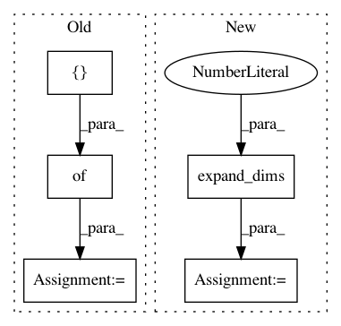

a7b9958c939bbb1132ae6e2e0f8f408effaa2da7,magenta/models/onsets_frames_transcription/model.py,,model_fn,#Any#Any#Any#Any#Any#,211
Before Change
onset_predictions = onset_probs_flat > hparams.predict_onset_threshold
offset_predictions = offset_probs_flat > hparams.predict_offset_threshold
predictions = {
// frame_probs is exported for writing out piano roll during inference.
"frame_probs": [frame_probs_flat],
"frame_predictions": [frame_predictions],
"onset_predictions": [onset_predictions],
"offset_predictions": [offset_predictions],
"velocity_values": [velocity_values_flat],
}
train_op = None
loss = None
if is_training:
After Change
onset_predictions = onset_probs_flat > hparams.predict_onset_threshold
offset_predictions = offset_probs_flat > hparams.predict_offset_threshold
predictions = {
// frame_probs is exported for writing out piano roll during inference.
"frame_probs": tf.expand_dims(frame_probs_flat, axis=0),
"frame_predictions": tf.expand_dims(frame_predictions, axis=0),
"onset_predictions": tf.expand_dims(onset_predictions, axis=0),
"offset_predictions": tf.expand_dims(offset_predictions, axis=0),
"velocity_values": tf.expand_dims(velocity_values_flat, axis=0),
}
train_op = None
loss = None
if is_training:
In pattern: SUPERPATTERN
Frequency: 3
Non-data size: 5
Instances
Project Name: tensorflow/magenta
Commit Name: a7b9958c939bbb1132ae6e2e0f8f408effaa2da7
Time: 2019-06-06
Author: fjord@google.com
File Name: magenta/models/onsets_frames_transcription/model.py
Class Name:
Method Name: model_fn
Project Name: tensorflow/models
Commit Name: 855d29dba61a53553e8fc89237773368fd7e9cdf
Time: 2020-07-29
Author: sbeery@google.com
File Name: research/object_detection/dataset_tools/context_rcnn/generate_embedding_data.py
Class Name: GenerateEmbeddingDataFn
Method Name: _run_inference_and_generate_embedding
Project Name: tensorflow/models
Commit Name: 855d29dba61a53553e8fc89237773368fd7e9cdf
Time: 2020-07-29
Author: sbeery@google.com
File Name: research/object_detection/dataset_tools/context_rcnn/generate_detection_data.py
Class Name: GenerateDetectionDataFn
Method Name: _run_inference_and_generate_detections